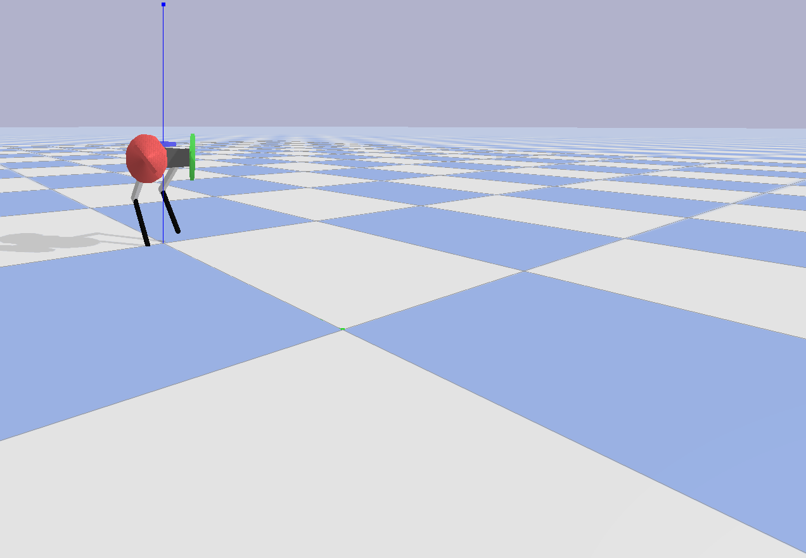
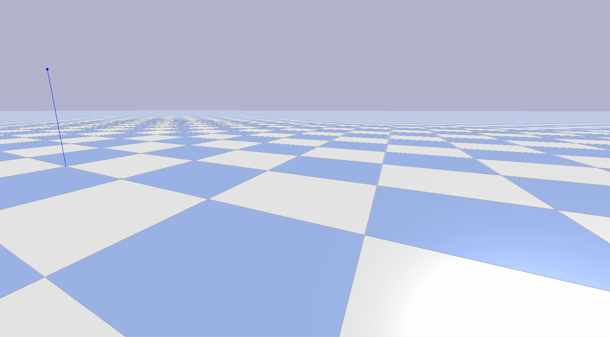
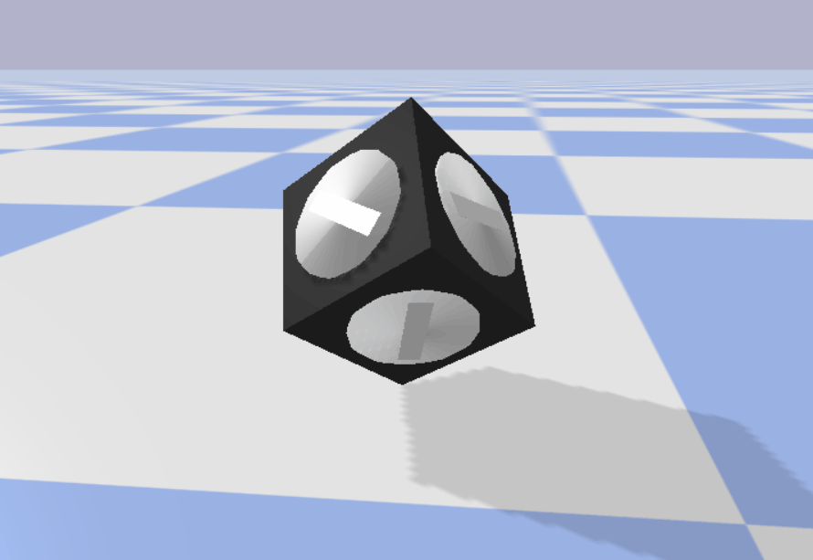
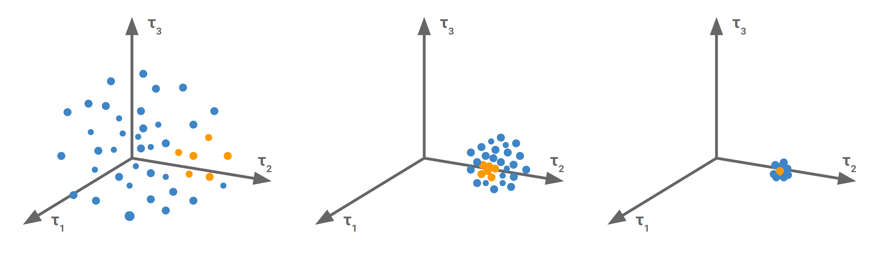
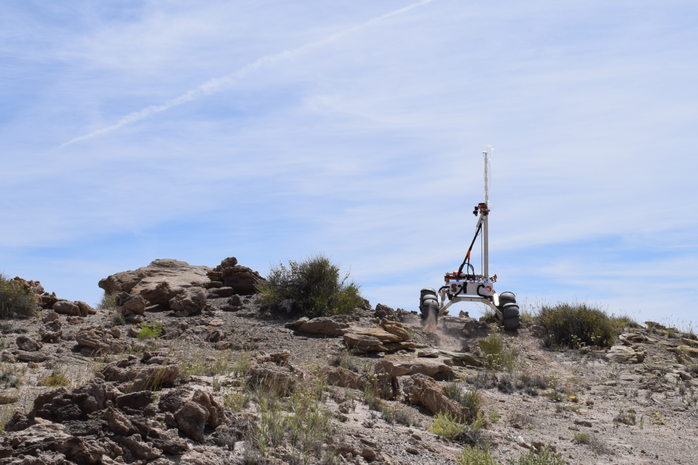

Biped
- This is a bipedal robot capable of high-mobility maneuvers in an uncertain environment.
- Reaction wheels are integrated into the body for persistent control torque independent of foot contact.
- The wheels store angular momentum allowing the robot to react to unexpected dynamics such as external forces or sim-to-real differences even when no feet are on the ground.
- My robot is controlled by a novel, contact-implicit model predictive controller.
- A custom cost function balances path accuracy, reaction wheel saturation, and energy usage.
- Robot dynamics are calculated with a custom, semi-rigid contact model.
- An explicit contact sequence is not used; instead, contact is optimized alongside path planning.
- The solver chooses the contact sequence that minimizes the cost function, instead of a predefined contact pattern.
- The numerical opimization is performed by the Crocoddyl library's FDDP solver, though I am working on a solver that is explicitly designed around changing contact modes.
- This is a solo project that I have been working on in my spare time for the last 1.5 years.


0.33x Speed
Chess Bot
- Chess Bot is a controller that allows a Panda Arm to play chess.
- It uses task space control for smooth and efficient motion planning.
- Inverse dynamics of the arm are calculated at every step to generate feed-forward torques.
- Real-time feedback loops make the controller robust to environmental uncertainty.
- Grip is controlled using force feedback.
- Stockfish integration gives the arm the optimal move to play.
- A simple computer vision script estimates the board state using April tags on the pieces.
My Contribution
- Designing the path planning algorithm
- Feed-forward dynamics calculations
- Object manipulation
- Team size: 3
Gyro Cube
- Gyro Cube is a cube-shaped robot controlled with internal gyroscopes similar to ETH Zürich's Cubli.
- Cross-entropy policy search is used to efficiently compute the optimal trajectory for the look-ahead period.
- 70 simulated rollouts estimate a gaussian fit of the cost function.
- New control inputs are chosen by sampling this Gaussian distribution.
- The sample converges to an optimal trajectory by iterating through these 2 steps.
- A custom cost function rewards pose matching and efficient movement while penalizing reaction wheel saturation.
My Contribution
- Creating and optimizing the simulated rollout transition function
- Implementing the cross-entropy search algorithm
- Designing and tuning the reward functions
- Team size: 3


Collaborative Robot
- This collaborative controller runs a Trossen Robotics' Locobot to complete a simple sorting task with other robots, without directly communicating.
- Task:
- Multiple robots are deployed onto a course scattered with many colored blocks (red, yellow, green, and blue).
- Three circles denote stations where specific block colors are to be gathered to fit a given recipe.
- The catch is that the recipes are not designated to a particular station, meaning that robots must agree on which station gets which recipe without directly communicating.
- For more information check out our problem-statement
- A custom perception algorithm takes depth camera data and detects blocks, their colors, stations, and obstacles using a probabilistic occupancy grid.
- The system tracks the state of the stations to observe how other robots place blocks.
- This allows the controller to estimate what the other robots believe about the station recipes and choose the block move that gives the highest expected value in the least amount of time.
- Drive paths are continuously calculated to avoid obstacles and other robots.
- An arm controller uses the depth camera to locate, grab, and deposit blocks.
- Read more on our project website
My Contribution
- The perception module and occupancy grid
- The belief estimator
- The drive controller
- Team size: 4
Mars Rover
- I designed the chassis and suspension for Stanford's University Rover Challenge team.
- The suspension consists of a series of linkages that set the height of the rover's six wheels in response to changing terrain below the rover.
- The linkages form a mechanical controller that optimizes the weight distribution between the wheels to allow the rover to glide over large obstacles.
- The mechanical advantage of the linkages change with height, allocating more weight from lower- to higher-positioned wheels.
- Weight is moved away from wheels that need to climb up an obstacle to wheels that have already climbed that obstacle.
- Unlike a spring-based suspension, this chassis has a well-constrained configuration for a given ground curvature.
- Changing forces on the chassis do not induce movement in the suspension.
- This results in a rigid platform for the arm to operate off of.
- This chassis is an improvement on my 2019 chassis, which carried our rover to a 3rd place
finish internationally. The 2020 rover never got to compete, as the competition did not run
during the pandemic.
My Contribution
- This is a novel suspension that I invented, designed, and fabricated.
- While this rover was the work of a team, this chassis was solely my responsibility.
- Team size: 8

